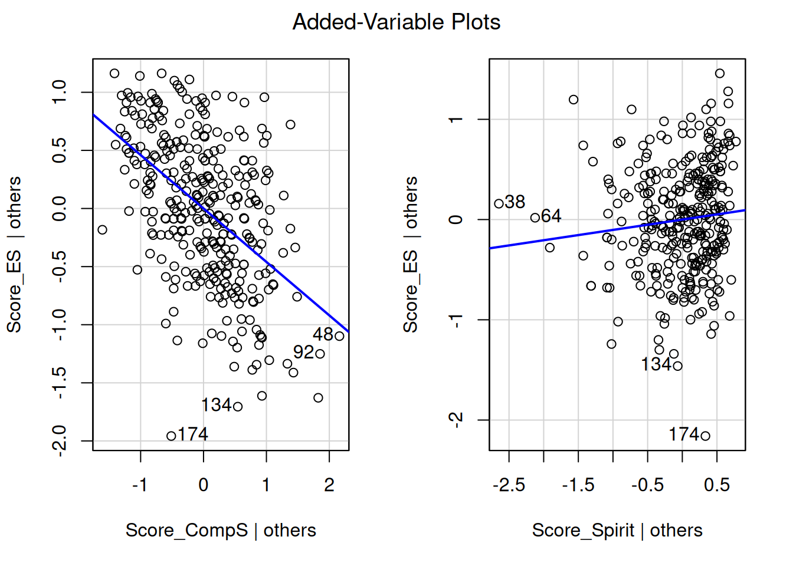

The analysis focuses on the psychological research domain, specifically examining the impact of spirituality on self-esteem, mediated by social and temporal comparison mechanisms. The goal is to offer a practical, accessible introduction to SEM for researchers and students interested in psychological data analysis.
Import Data
The dataset used in this study is imported in .csv format and we remove all missing values with the na.omit() function.
To represent the distribution of responses to each questionnaire item, we use barplots. This approach is more intuitive for categorical questionnaire data. We also use facet grids to separate items by construct (e.g., self-esteem, social comparison).
Note that colors can be chosen to be accessible to colorblind individuals.
# Fit linear modelsM1 <-lm(Score_CompS ~ Score_Spirit, data = SSPM_data)# Summarize resultssummary(M1)
Call:
lm(formula = Score_CompS ~ Score_Spirit, data = SSPM_data)
Residuals:
Min 1Q Median 3Q Max
-1.60826 -0.49391 0.02527 0.49259 2.16091
Coefficients:
Estimate Std. Error t value Pr(>|t|)
(Intercept) 3.75886 0.31178 12.056 < 2e-16 ***
Score_Spirit -0.30683 0.06996 -4.386 1.56e-05 ***
---
Signif. codes: 0 '***' 0.001 '**' 0.01 '*' 0.05 '.' 0.1 ' ' 1
Residual standard error: 0.6836 on 329 degrees of freedom
Multiple R-squared: 0.05524, Adjusted R-squared: 0.05236
F-statistic: 19.24 on 1 and 329 DF, p-value: 1.558e-05
Show the code
# Visualize M1 with added-variable plotscar::avPlots(M1)
Show the code
# Fit linear modelsM2 <-lm(Score_ES ~ Score_CompS + Score_Spirit, data = SSPM_data)# Summarize resultssummary(M2)
Call:
lm(formula = Score_ES ~ Score_CompS + Score_Spirit, data = SSPM_data)
Residuals:
Min 1Q Median 3Q Max
-2.1939 -0.3667 0.0061 0.3898 1.4025
Coefficients:
Estimate Std. Error t value Pr(>|t|)
(Intercept) 4.59609 0.29881 15.381 <2e-16 ***
Score_CompS -0.46000 0.04401 -10.453 <2e-16 ***
Score_Spirit 0.10314 0.05745 1.795 0.0735 .
---
Signif. codes: 0 '***' 0.001 '**' 0.01 '*' 0.05 '.' 0.1 ' ' 1
Residual standard error: 0.5456 on 328 degrees of freedom
Multiple R-squared: 0.2813, Adjusted R-squared: 0.277
F-statistic: 64.2 on 2 and 328 DF, p-value: < 2.2e-16
Show the code
# Visualize M2 with added-variable plotscar::avPlots(M2)

M1 tests the direct effect of spirituality on social comparison and M2 tests the combined effect of social comparison and spirituality on self-esteem.
Then, the avPlots function helps visualize the contribution of each predictor, adjusting for the others.
From Linear Models to Structural Equation Modeling: Why SEM Matters
In the preliminary analysis, we used linear regression models (lm) to explore the relationships between spirituality, social/temporal comparison, and self-esteem. These models rely on composite scores—that is, the total or average scores derived from summing or averaging responses to multiple questionnaire items (e.g., Score_Spirit, Score_CompS, Score_ES). While this approach is straightforward and easy to interpret, it has several limitations:
Loss of Nuance: By aggregating individual items into a single score, we assume that all items contribute equally to the underlying construct (e.g., spirituality or self-esteem). This ignores the possibility that some items may be more relevant or reliable than others, or that the construct itself is multidimensional.
Measurement Error: Composite scores are treated as perfectly measured variables, which is rarely true in practice. Measurement error (e.g., due to poorly worded questions or individual differences in interpretation) can bias the estimated relationships between variables.
Limited Theoretical Flexibility: Linear regression cannot explicitly model complex theoretical relationships, such as mediation, moderation, or latent variables (unobserved constructs inferred from observed variables).
Structural Equation Modeling (SEM) addresses these limitations by offering a more sophisticated and theoretically grounded framework for analyzing relationships between variables.
This model can be interpreted as a study aiming to explain the direct effect of \(X\) on \(Y\) and the indirect effect of \(X\) on \(Y\) through \(M\). The latter variable is called the mediation variable. In detail, we have:
\(Y\) and \(M\) are latent endogenous variables
\(X\) is a latent exogenous variable
\(m_i\) are observed endogenous variables, for \(i \in \{1, ..., r\}\)
\(x_j\) are observed exogenous variables, for \(j \in \{1, ..., s\}\)
\(y_k\) are observed endogenous variables, for \(k \in \{1, ..., t\}\)
We can rewrite the model as a system:
\[
\begin{cases}
\textbf{Measurement model} \\
m_i = \gamma_i M + \xi_{m_i}, \quad \text{for } i \in \{1, ..., r\} \\
x_j = \alpha_j X + \xi_{x_j}, \quad \text{for } j \in \{1, ..., s\} \\
y_k = \beta_k Y + \xi_{y_k}, \quad \text{for } k \in \{1, ..., t\} \\
\\
\textbf{Structural Model} \\
M = b_0 + b_1 X + \mathcal{E}_{M} \\
Y = a_0 + a_1 X + a_2 M + \mathcal{E}_Y
\end{cases}
\]
We can also rewrite the structural model in the form of a matrix equation:
\[
\begin{pmatrix}
M \\
Y
\end{pmatrix}
=
\begin{pmatrix}
b_0 \\
a_0
\end{pmatrix}
+
\begin{pmatrix}
b_1 & 0 \\
a_1 & a_2
\end{pmatrix}
\begin{pmatrix}
X \\
M
\end{pmatrix}
+
\begin{pmatrix}
\mathcal{E}_{M} \\
\mathcal{E}_Y
\end{pmatrix}
\]
Now, thanks to the way we wrote the model, we can make the different effects explicit. To do this, we take the structural model and substitute the first line into the second line:
\[
\begin{cases}
M = b_0 + b_1 X + \mathcal{E}_{M} \\
Y = a_0 + a_1 X + a_2 M + \mathcal{E}_Y
\end{cases}
\]
\(\Leftrightarrow Y = a_0 + a_1 X + a_2 (b_0 + b_1 X + \mathcal{E}_{M}) + \mathcal{E}_Y\)
\(\Leftrightarrow Y = a_0 + a_2 b_0 + a_1 X + a_2 b_1 X + \mathcal{E}'\)
\(\Leftrightarrow Y = (a_0 + a_2 b_0) + (a_1 + a_2 b_1) X + \mathcal{E}'\)
Here, \(\quad \mathcal{E}' = a_2 \mathcal{E}_{M} + \mathcal{E}_Y\) with \(\mathcal{E}' \in [X]^\bot\) because \(\mathcal{E}_M \in [X]^\bot\) and \(\mathcal{E}_Y \in [X, M]^\bot\)
Therefore, we can write the effects of \(X\) on \(Y\):
We build several model which connects the latent variables Spirituality, Social comparison, Temporal comparison and Self esteem.
Each of them being determined by different observed variables.
The library lavaan on R is usually used to estimate a large variety of multivariate statistical models, like structural equation modeling. For information, this package also permit to estimate path analysis, confirmatory factor analysis and growth curve models.
To programm a structural equation modeling on R, we proceed like this :
\(=\sim\) : indicate by which observed variables is measured the latent variable
\(\sim \;\;\;\) : indicate by which linear regression is estimate the latent variable
\(\sim\sim\) : indicate the covariance between residuals
Then, to fit the model we use the following function :
\[\begin{align*}
fit <- sem(\text{model} = \text{Model}, \text{ data})
\end{align*}\]
To make a summary on fit permit to obtain some informations like the AIC criterion and the BIC criterion of the model but also an estimation of the differents coefficients.
Furthermore, there is also possible to do a SEM on Python with the package semopy. The method used is similar to the one used with lavaan and the estimations are very closed.
Before to model the data frame, it is necessary to determine the four latent variables that will be used in the different models : Spirituality, Social comparison, Temporal comparison and Self-esteem.
For the variable Spirituality, we preserve all the observed variables of the study. Nevertheless, for Social comparison, Temporal comparison and Self-esteem we only keep the observed variables which have positive coefficients. We can summarize the number of observed variables per latent variables in the following tabular.
Latent Variables
Number of Observed Variables
Spirituality
16
Social comparison
4
Temporal comparison
4
Self-esteem
5
Table 2: Number of observed variables per latent variable
We can express the measurement model for the latent variables with their corresponding observed variables in the form of equations:
Disposing of all our latent variables, it is possible to build different models of structural equations.
As seen, before, In R, the most basic way to run a linear regression is to use the lm() function which is available in base R.
If we look again at the M2 model we had :
Show the code
summary(M2)
Call:
lm(formula = Score_ES ~ Score_CompS + Score_Spirit, data = SSPM_data)
Residuals:
Min 1Q Median 3Q Max
-2.1939 -0.3667 0.0061 0.3898 1.4025
Coefficients:
Estimate Std. Error t value Pr(>|t|)
(Intercept) 4.59609 0.29881 15.381 <2e-16 ***
Score_CompS -0.46000 0.04401 -10.453 <2e-16 ***
Score_Spirit 0.10314 0.05745 1.795 0.0735 .
---
Signif. codes: 0 '***' 0.001 '**' 0.01 '*' 0.05 '.' 0.1 ' ' 1
Residual standard error: 0.5456 on 328 degrees of freedom
Multiple R-squared: 0.2813, Adjusted R-squared: 0.277
F-statistic: 64.2 on 2 and 328 DF, p-value: < 2.2e-16
The predicted mean of read is 0 for a student with motiv=0 and for a one unit increase in motivation, the reading score improves 0.530 points. Make special note of the residual standard error which is . The square of that is the residual variance, which we will see later in lavaan(). We can run the equivalent code in lavaan. The syntax is very similar to lm() in that read ~ motiv specifies the predictor motiv on the outcome read. However, by default the intercept is not included in the output but is implied. If we want to add an intercept, we need to include read ~ 1 + motiv. Optionally, you can request the variance of motiv using motiv ~~ motiv. If this syntax is not provided, the parameter is still estimated but just implied.
lavaan 0.6-20 ended normally after 20 iterations
Estimator ML
Optimization method NLMINB
Number of model parameters 9
Number of observations 331
Model Test User Model:
Test statistic 0.000
Degrees of freedom 0
Parameter Estimates:
Standard errors Standard
Information Expected
Information saturated (h1) model Structured
Regressions:
Estimate Std.Err z-value P(>|z|)
Score_ES ~
Score_CompS -0.460 0.044 -10.501 0.000
Score_Spirit 0.103 0.057 1.803 0.071
Covariances:
Estimate Std.Err z-value P(>|z|)
Score_CompS ~~
Score_Spirit -0.089 0.021 -4.162 0.000
Intercepts:
Estimate Std.Err z-value P(>|z|)
.Score_ES 4.596 0.297 15.451 0.000
Score_CompS 2.401 0.039 62.310 0.000
Score_Spirit 4.424 0.030 149.861 0.000
Variances:
Estimate Std.Err z-value P(>|z|)
.Score_ES 0.295 0.023 12.865 0.000
Score_CompS 0.492 0.038 12.865 0.000
Score_Spirit 0.288 0.022 12.865 0.000
Show the code
#simple regression using lavaan m1b <-' # regressions Score_ES ~ 1 + Score_CompS + Score_Spirit'fit1b <-sem(m1b, data = SSPM_data)summary(fit1b)
lavaan 0.6-20 ended normally after 1 iteration
Estimator ML
Optimization method NLMINB
Number of model parameters 4
Number of observations 331
Model Test User Model:
Test statistic 0.000
Degrees of freedom 0
Parameter Estimates:
Standard errors Standard
Information Expected
Information saturated (h1) model Structured
Regressions:
Estimate Std.Err z-value P(>|z|)
Score_ES ~
Score_CompS -0.460 0.044 -10.501 0.000
Score_Spirit 0.103 0.057 1.803 0.071
Intercepts:
Estimate Std.Err z-value P(>|z|)
.Score_ES 4.596 0.297 15.451 0.000
Variances:
Estimate Std.Err z-value P(>|z|)
.Score_ES 0.295 0.023 12.865 0.000
The intercept of .read (-0.000) and the regression coefficient of read ~ motiv (0.530) matches the output of lm() with small rounding errors. Note that the . in front of the parameter denotes an endogenous variable under Intercepts and a residual variance if under Variances or Covariances. The intercept for motiv (0.000) does not have a . nor does its variance (99.800) signifying that it is an exogenous mean and variance. The exogenous mean and variance should closely match the univariate mean (0) and variance (100) as shown below:
Show the code
model1 <-'# Measurement modelCompSoc =~ compSoc1 + compSoc3 + compSoc4 + compSoc6ES =~ es3 + es5 + es8 + es9 + es10Spirit =~ spirit1 + spirit2 + spirit3 + spirit4 + spirit5 + spirit6 + spirit7 + spirit8 + spirit9 + spirit10 + spirit11 + spirit12 + spirit13 + spirit14 + spirit15 + spirit16# Structural modelCompSoc ~ 1 + b1 * SpiritES ~ 1 + a1 * Spirit + a2 * CompSocDirect := a1 Indirect := b1 * a2Total := Direct + Indirect'fit1 <-sem( model1,# The structural equation modeldata = SSPM_data,# The dataset containing the variables to be analyzedstd.lv = T,# Standardization of latent variables# T (TRUE): Latent variables will be standardized (mean=0, standard deviation=1)# F (FALSE): Latent variables will not be standardized (default)# Useful for comparing coefficients across different models or studiesse ="boot",# Method for estimating standard errors# "boot": Uses bootstrapping to estimate standard errors# Other possible options: "standard" (default), "robust", etc.# Bootstrapping is useful for small sample sizes or when normality assumptions are not metbootstrap =100# Number of bootstrap resamples# 100: Number of bootstrap replications to perform# Higher numbers provide more precise estimates but increase computation time# A minimum of 100 is often recommended, but 1000 or more is ideal for stable results# This parameter is only considered if se="boot")
The aim is to analyse direct and indirect effects on Self-esteem for the model fit3. To reference to the first part, we rename our latent variables as we already have done for fit1 and fit2 :
This is a parallel mediation model. It is possible to analyse the direct and indirect effects on \(Y\). Before that, we explicit the structural model and we substitute in the expression of \(Y\).
\[
\begin{cases}
M_1 = c_0 + c_1X + \mathcal{E}_{M_1}\\
M_2 = b_0 + b_1 X + \mathcal{E}_{M_2} \\
Y = a_0 + a_1 X + a_2 M_1 + a_3M_2 + \mathcal{E}_Y
\end{cases}
\]\[\Leftrightarrow Y = (a_0 + a_2c_0 + a_3b_0) + (a_1 + a_2c_1 + a_3b_1)X + \mathcal{E}'\] We can verify that the model is identifiable by looking if the degree of freedom is greater than 0 :
Show the code
cat("Degree of fredom for fit3 :", semPower::semPower.getDf(fit3))
Degree of fredom for fit3 : 369
Finally, with the summary of the fit of the model fit3 in R, we can build the following table:
Effect
Expression
Estimate
Std.Err
P-value
Direct
\(a_1\)
-0.036
0.062
0.561
Indirect1
\(a_2 c_1\)
-0.116
0.047
0.013
Indirect2
\(a_3 b_1\)
0.023
0.019
0.235
Indirect
\(a_2 c_1 + a_3 b_1\)
-0.093
0.038
0.014
Total
\(a_1 + a_2 c_1 + a_3 b_1\)
-0.129
0.061
0.034
Table ?????,: Effects on \(Y\) for the model fit3
We can conclude that in the model fit3, the indirect effect is significant for the variable Self-esteem.
Especially, the most significant effect is given by the path : Spirituality \(\rightarrow\) Social comparison \(\rightarrow\) Self-esteem.
The aim is to analyse direct and indirect effects on Self-esteem for the model fit4. To reference to the first part, we rename our latent variables as we already have done for fit1 and fit2 :
This is a serial mediation model. It is possible to analyse the direct and indirect effects on \(Y\). Before that, we explicit the structural model and we substitute in the expression of \(Y\).
\[
\begin{cases}
M_1 = c_0 + c_1X + \mathcal{E}_{M_1}\\
M_2 = b_0 + b_1 X + b_2 M_2 + \mathcal{E}_{M_2} \\
Y = a_0 + a_1 X + a_2 M_1 + a_3M_2 + \mathcal{E}_Y
\end{cases}
\]\[\Leftrightarrow Y = (a_0 + a_2c_0 + a_3b_0 + a_3b_2c_0) + (a_1 + a_2c_1 + a_3b_1 + a_3b_2c_1)X + \mathcal{E}'\] We can verify that the model is identifiable by looking if the degree of freedom is greater than 0 :
Show the code
cat("Degree of fredom for fit4 :", semPower::semPower.getDf(fit4))
Degree of fredom for fit4 : 368
Finally, with the summary of the fit of the model fi43 in R, we can build the following table:
Effect
Expression
Estimate
Std.Err
P-value
Direct
\(a_1\)
-0.033
0.063
0.604
Indirect1
\(a_2 c_1\)
-0.129
0.053
0.014
Indirect2
\(a_3 b_1\)
-0.002
0.013
0.880
Indirect3
\(a_3b_2c_1\)
0.034
0.021
0.108
Indirect
\(a_2 c_1 + a_3 b_1 + a_3b_2c_1\)
-0.097
0.039
0.014
Total
\(a_1 + a_2c_1 + a_3b_1 + a_3b_2c_1\)
-0.130
0.061
0.034
Table ?????,: Effects on \(Y\) for the model fit4
We can conclude that in the model fit4, the indirect effect is significant for the variable Self-esteem.
Especially, the most significant effect is given by the path : Spirituality \(\rightarrow\) Social comparison \(\rightarrow\) Self-esteem (same as fit3).
Model selection
In this part, the objective will be to compare all the models we built to determine which one is the best for the study.
At first, the aim will be to compare models with the same size, that means with and with . To do that we use the criteria of AIC and BIC. All the values are given in the summaries of the different .
Model
AIC
BIC
SABIC
Model 1
18567.694
18871.863
18618.101
Model 2
18409.843
18714.013
18460.251
Table ?????,: Criteria AIC and BIC for the different models
Model
AIC
BIC
SABIC
Model 3
22454.464
22815.665
22514.322
Model 4
22408.201
22773.205
22468.690
Table ?????,: Criteria AIC and BIC for the different models
In both cases, the best model is the model which minimize the criterion AIC and the criterion BIC. We retain the models mod2 and mod4.
Now stay available two models which are mod2 and mod4. To decide between them, we realize a test of nested models using the function anova on R.
The Chi-Squared Difference Test give a p-value < 0.05 .
The test indicates that it is preferable to keep the additional variable of the model mod4.
We can conclude that the model mod4 is the best model for the study.
Results
The aim of the study was to understand the connections between spirituality, social comparison, temporal comparison and self-esteem for individuals. Especially, we wanted to analyze the effects of spirituality on self-esteem and determine if they pass through social comparison and/or temporal comparison.
Thanks to criteria and tests we used, we were able to define the best model for this study : fit4.
It gather all the notions and take into account an influence of social comparison on temporal comparison. According to this model which highlights the significance of the indirect effect Indirect1, the main effect on self-esteem of individuals is social comparison due to spirituality.
To put it in a nutshell, we can conclude in favor of connection between the different notions. Especially, the effect of spirituality on self-esteem transits by social comparison.
---title: "Structural equation modeling and application in psychology (WIP)"author: "Clément Poupelin"date: 10-14-2025date-modified: "`r Sys.Date()`"format: html: embed-resources: false toc: true code-fold: true code-summary: "Show the code" code-tools: true toc-location: right page-layout: article code-overflow: wrapnumber-sections: falseeditor: visualcategories: ["Structural Equation Modeling", "Psychology"]description: "This study was made during the Supervised Study Project in Mathematics (SSPM) of the first year of master"execute: echo: true warning: false message: false error: true---<!-- # Intervenant.e.s --><!-- ### Rédaction --><!-- - **Clément Poupelin**, [clementjc.poupelin\@gmail.com](mailto:clementjc.poupelin@gmail.com){.email}\ --><!-- ### Relecture --><!-- - --><!-- ```{r tikz, engine = 'tikz', echo = FALSE, fig.width=6, fig.height=4} --><!-- \usetikzlibrary{shapes.geometric, arrows.meta, positioning} --><!-- \tikzstyle{decision} = [diamond, draw, fill=white] --><!-- \tikzstyle{line} = [draw, -Stealth, thick] --><!-- \tikzstyle{elli} = [draw, ellipse, fill=gray!20, minimum height=8mm, text width=5em, text centered] --><!-- \tikzstyle{block} = [draw, rectangle, fill=white, text width=8em, text centered, minimum height=7mm, node distance=3em] --><!-- \begin{tikzpicture} %[scale=0.5, transform shape] --><!-- % scale=1.2 agrandit tout de 20 %. --><!-- % transform shape permet de garder la mise à l’échelle du texte aussi. --><!-- % Create Blocks --><!-- \node [elli, fill = green!30!white] (compS) {Social comparison}; --><!-- \node [elli, fill = magenta!30!white, below of = compS, yshift=-3em, xshift=6em] (selfE) {Self-esteem}; --><!-- \node [elli, fill = orange!30!white, below of = compS, yshift=-3em, xshift=-6em] (spirit) {Spirituality}; --><!-- % Add Arrows --><!-- \path [line] (spirit) -- node[midway, above left] {$\beta = 0.45^{***}$} (compS); --><!-- \path [line] (compS) -- node[midway, right] {$\beta = 0.60^{***}$} (selfE); --><!-- \path [line] (spirit) -- node[midway, below] {$\beta = 0.25^{*}$} (selfE); --><!-- \end{tikzpicture} --><!-- ``` -->## Setup::: panel-tabset### packages```{r}library(dplyr) ## Data manipulationlibrary(tidyr) ## Data manipulationlibrary(ggplot2) ## Plotslibrary(viridis) ## Colorblind paletlibrary(lavaan) ## Structural equation modeling# devtools::install_github('SachaEpskamp/semPlot')# library(semPlot)```### Functions```{r}create_barplot <-function(data, title, palette ="viridis") { data_long <- data %>%pivot_longer(cols =everything(), names_to ="Item", values_to ="Response")ggplot(data_long, aes(x =factor(Response), fill =factor(Response))) +geom_bar() +facet_wrap(~ Item, ncol =2) +# 2 colonnes pour le facetlabs(title = title, x ="Response", y ="Frequency") +scale_fill_viridis_d(option = palette, direction =-1) +theme_minimal() +theme(plot.title =element_text(size =32, face ="bold"),axis.title.y =element_text(size =22),axis.title.x =element_text(size =22),axis.text.y =element_text(size =20),axis.text.x =element_text(size =20, angle =45, hjust =1),strip.text =element_text(size =24, face ="bold"), # Personnalisation des titres des facetslegend.position ="none"# Pas besoin de légende redondante )}```### Seed```{r}set.seed(140400)```:::## AbstractThis tutorial provides a simple application of Structural Equation Modeling (SEM) to introduce the concept using a modified and simplified version of the dataset from the article "[Explicit spirituality, self-esteem and the mechanisms of social and temporal comparison](https://dergipark.org.tr/en/download/article-file/2592756)" by Justine Ollivaud, Jean-Michel Galharret, and Nicolas Roussiau.\It is inspired by the Supervised Study Project in Mathematics (SSPM) of the first year of master [Structural equation modeling and application in psychology](http://clement-poupelin.github.io/publications.html) by [Clément Poupelin](http://clement-poupelin.github.io/) and [Aëla Jogot](http://fr.linkedin.com/in/a%C3%ABla-jagot-91834a200).\The analysis focuses on the psychological research domain, specifically examining the impact of spirituality on self-esteem, mediated by social and temporal comparison mechanisms. The goal is to offer a practical, accessible introduction to SEM for researchers and students interested in psychological data analysis.## Import DataThe dataset used in this study is imported in .csv format and we remove all missing values with the `na.omit()` function.```{r}# Load the datasetSSPM_data <-read.csv("~/Documents/1_Projet/Perso/SSPM_data.csv")# remove missing valuesSSPM_data <- SSPM_data[,1:47] %>%na.omit()```It includes `r nrow(SSPM_data)` individuals characterized by the `r ncol(SSPM_data)` following variables : - `Identifiant` : integer assigned to the individual - `spirit1`, $\cdots$ , `spirit16` : answers of the individual for the 16 questions which relate to spirituality - `Score_Spirit` : total score of the individual for the questions which relate to spirituality - `CompSoc1`, $\cdots$ , `CompSoc8` : answers of the individual for the 8 questions which relate to social comparison - `Score_CompS` : total score of the individual for the questions which relate to social comparison - `CompTemp1`, $\cdots$ , `CompTemp8` : answers of the individual for the 8 questions which relate to temporal comparison - `Score_CompT` : total score of the individual for the questions which relate to temporal comparison - `es1`, $\cdots$ , `es10` : answers of the individual for the 10 questions which relate to self esteem - `Score_ES` : total score of the individual for the questions which relate to self esteem<!-- - `Sexe` : sexe of the individual --><!-- - `Age` : age of the individual --><!-- - `Croy_Rel` : belief or not of the individual to religion -->```{r}SSPM_data %>% DT::datatable()```For this analysis, only positively worded items are retained:```{r}# Select positively worded itemses_selected <-subset(SSPM_data,select =c(es3, es5, es8, es9, es10)) compSoc_selected <-subset(SSPM_data,select =c(compSoc1, compSoc3, compSoc4, compSoc6))compTemp_selected <-subset(SSPM_data,select =c(compTemp1, compTemp3, compTemp4, compTemp6))spirit_selected <-subset(SSPM_data,select =c(spirit1, spirit2, spirit3, spirit4, spirit5, spirit6, spirit7, spirit8, spirit9, spirit10, spirit11, spirit12, spirit13, spirit14, spirit15, spirit16))es_selected %>%colnames() %>%print()compSoc_selected %>%colnames() %>%print()compTemp_selected %>%colnames() %>%print()spirit_selected %>%colnames() %>%print()```## Preliminary analysis### Descriptive analysisTo represent the distribution of responses to each questionnaire item, we use barplots. This approach is more intuitive for categorical questionnaire data. We also use facet grids to separate items by construct (e.g., self-esteem, social comparison).\Note that colors can be chosen to be accessible to colorblind individuals.::: panel-tabset## Self-Esteem```{r, fig.width=16, fig.height=14}create_barplot(es_selected, "Selected Self-Esteem Items", palette = "D")```## Spirituality```{r, fig.width=16, fig.height=18}create_barplot(spirit_selected, "Spirituality Items", palette = "A")```## Social Comparison```{r, fig.width=16, fig.height=14}create_barplot(compSoc_selected, "Selected Social Comparison Items", palette = "E")```## Temporal Comparison```{r, fig.width=16, fig.height=14}create_barplot(compTemp_selected, "Selected Temporal Comparison Items", palette = "F")```:::### Linear ModelWe fit two linear models to explore the relationships between spirituality, social/temporal comparison, and self-esteem: - Model 1 (M1): Social comparison as a function of spirituality - Model 2 (M2): Self-esteem as a function of social comparison and spirituality::: panel-tabset#### Model 1 ```{r}# Fit linear modelsM1 <-lm(Score_CompS ~ Score_Spirit, data = SSPM_data)# Summarize resultssummary(M1)# Visualize M1 with added-variable plotscar::avPlots(M1)```#### Model 2```{r}# Fit linear modelsM2 <-lm(Score_ES ~ Score_CompS + Score_Spirit, data = SSPM_data)# Summarize resultssummary(M2)# Visualize M2 with added-variable plotscar::avPlots(M2)```::: M1 tests the direct effect of spirituality on social comparison and M2 tests the combined effect of social comparison and spirituality on self-esteem.Then, the avPlots function helps visualize the contribution of each predictor, adjusting for the others.### From Linear Models to Structural Equation Modeling: Why SEM MattersIn the preliminary analysis, we used linear regression models (lm) to explore the relationships between spirituality, social/temporal comparison, and self-esteem. These models rely on composite scores—that is, the total or average scores derived from summing or averaging responses to multiple questionnaire items (e.g., Score_Spirit, Score_CompS, Score_ES). While this approach is straightforward and easy to interpret, it has several limitations: - **Loss of Nuance**: By aggregating individual items into a single score, we assume that all items contribute equally to the underlying construct (e.g., spirituality or self-esteem). This ignores the possibility that some items may be more relevant or reliable than others, or that the construct itself is multidimensional. - **Measurement Error**: Composite scores are treated as perfectly measured variables, which is rarely true in practice. Measurement error (e.g., due to poorly worded questions or individual differences in interpretation) can bias the estimated relationships between variables. - **Limited Theoretical Flexibility**: Linear regression cannot explicitly model complex theoretical relationships, such as mediation, moderation, or latent variables (unobserved constructs inferred from observed variables).**Structural Equation Modeling (SEM) addresses these limitations by offering a more sophisticated and theoretically grounded framework for analyzing relationships between variables**.\## Structural Equation Modeling### TheoryFor a quick understanding, we propose an example of SEM (For more details, do not hesitate to see the dedicated publication [Structural equation modeling and application in psychology](https://github.com/Clement-Poupelin/Clement-Poupelin.github.io/blob/main/docs/SSPM_Aela_JAGOT_Clement_POUPELIN_M1IS.pdf)).```{r, engine = 'tikz', echo = FALSE, fig.width=6, fig.height=4, fig.align='center'}\usetikzlibrary{shapes.geometric, arrows.meta, positioning}\tikzstyle{decision} = [diamond, draw, fill=white]\tikzstyle{line} = [draw, -Stealth, thick]\tikzstyle{elli} = [draw, ellipse, fill=gray!20, minimum height=8mm, text width=5em, text centered]\tikzstyle{block} = [draw, rectangle, fill=white, text width=8em, text centered, minimum height=7mm, node distance=3em]\begin{tikzpicture} % Create Blocks % M et ses items \node [elli, fill = red!30!white] (M) {$M$}; \node [block, fill = gray!20!white, above of = M, yshift=0.5em, xshift=-8em] (m1) {$m_1$}; \node [above of = M, yshift=2em, xshift=0em] (m2) {$\textbf{. . .}$}; \node [block, fill = gray!20!white, above of = M, yshift=0.5em, xshift=8em] (mr) {$m_r$}; \node [circle, fill = gray!20!white, above of = m1, yshift=1em, xshift=-1em] (xim1) {$\xi_{m_1}$}; \node [circle, fill = gray!20!white, above of = mr, yshift=1em, xshift=1em] (ximr) {$\xi_{m_r}$}; \node [circle, fill = red!30!white, below of = M, yshift=0.5em, xshift=-6em] (epsM) {$\mathcal{E}_M$}; % Y et ses items \node [elli, fill = red!30!white, below of = M, yshift=-6em, xshift=9em] (Y) {\(Y\)}; \node [block, fill = gray!20!white, right of = Y, yshift=4em, xshift=3em] (y1) {$y_1$}; \node [ right of = Y, yshift=0em, xshift=8em] (y2) {$\textbf{. . .}$}; \node [block, fill = gray!20!white, right of = Y, yshift=-4em, xshift=1em] (yt) {$y_t$}; \node [circle, fill = gray!20!white, above of = y1, yshift=1em, xshift=4em] (xiy1) {$\xi_{y_1}$}; \node [circle, fill = gray!20!white, below of = yt, yshift=-1em, xshift=4em] (xiyt) {$\xi_{y_t}$}; \node [circle, fill = red!30!white, right of = Y, yshift=-4em, xshift=-6em] (epsY) {$\mathcal{E}_Y$}; % X et ses items \node [elli, fill = red!30!white, below of = M, yshift=-10em, xshift=-10em] (X) {\(X\)}; \node [block, fill = gray!20!white, left of = X, yshift=-4em, xshift=1em] (x1) {$x_s$}; \node [left of = X, yshift=0em, xshift=-8em] (x2) {$\textbf{. . .}$}; \node [block, fill = gray!20!white, left of = X, yshift=4em, xshift=-2em] (xs) {$x_1$}; \node [circle, fill = gray!20!white, above of = xs, yshift=1em, xshift=-4em] (xixs) {$\xi_{x_1}$}; \node [circle, fill = gray!20!white, below of = x1, yshift=-1em, xshift=-3em] (xix1) {$\xi_{x_s}$}; % Add Arrows \path [line] (X) -- (M); \path [line] (M) -- (Y); \path [line] (X) -- (Y); \path [line] (M) -- (m1); \path [line] (M) -- (mr); \path [line] (xim1) -- (m1); \path [line] (ximr) -- (mr); \path [line] (epsM) -- (M); \path [line] (Y) -- (y1); \path [line] (Y) -- (yt); \path [line] (xiy1) -- (y1); \path [line] (xiyt) -- (yt); \path [line] (epsY) -- (Y); \path [line] (X) -- (x1); \path [line] (X) -- (xs); \path [line] (xix1) -- (x1); \path [line] (xixs) -- (xs);\end{tikzpicture}```This model can be interpreted as a study aiming to explain the direct effect of $X$ on $Y$ and the indirect effect of $X$ on $Y$ through $M$. The latter variable is called the **mediation variable**. In detail, we have:- $Y$ and $M$ are latent endogenous variables- $X$ is a latent exogenous variable- $m_i$ are observed endogenous variables, for $i \in \{1, ..., r\}$- $x_j$ are observed exogenous variables, for $j \in \{1, ..., s\}$- $y_k$ are observed endogenous variables, for $k \in \{1, ..., t\}$We can rewrite the model as a system:$$\begin{cases}\textbf{Measurement model} \\m_i = \gamma_i M + \xi_{m_i}, \quad \text{for } i \in \{1, ..., r\}\\x_j = \alpha_j X + \xi_{x_j}, \quad \text{for } j \in \{1, ..., s\}\\y_k = \beta_k Y + \xi_{y_k}, \quad \text{for } k \in \{1, ..., t\}\\\\\textbf{Structural Model} \\M = b_0 + b_1 X + \mathcal{E}_{M} \\Y = a_0 + a_1 X + a_2 M + \mathcal{E}_Y\end{cases}$$We can also rewrite the structural model in the form of a matrix equation:$$\begin{pmatrix}M \\Y\end{pmatrix}=\begin{pmatrix}b_0 \\a_0\end{pmatrix}+\begin{pmatrix}b_1 & 0 \\a_1 & a_2\end{pmatrix}\begin{pmatrix}X \\M\end{pmatrix}+\begin{pmatrix}\mathcal{E}_{M} \\\mathcal{E}_Y\end{pmatrix}$$Now, thanks to the way we wrote the model, we can make the different effects explicit. To do this, we take the structural model and substitute the first line into the second line:$$\begin{cases}M = b_0 + b_1 X + \mathcal{E}_{M} \\Y = a_0 + a_1 X + a_2 M + \mathcal{E}_Y\end{cases}$$$\Leftrightarrow Y = a_0 + a_1 X + a_2 (b_0 + b_1 X + \mathcal{E}_{M}) + \mathcal{E}_Y$$\Leftrightarrow Y = a_0 + a_2 b_0 + a_1 X + a_2 b_1 X + \mathcal{E}'$$\Leftrightarrow Y = (a_0 + a_2 b_0) + (a_1 + a_2 b_1) X + \mathcal{E}'$Here, $\quad \mathcal{E}' = a_2 \mathcal{E}_{M} + \mathcal{E}_Y$ with $\mathcal{E}' \in [X]^\bot$ because $\mathcal{E}_M \in [X]^\bot$ and $\mathcal{E}_Y \in [X, M]^\bot$\Therefore, we can write the effects of $X$ on $Y$:$$\underbrace{\overbrace{a_2 b_1}^{\text{Indirect effect}} + \overbrace{a_1}^{\text{Direct effect}}}_{\text{Total effect}}$$### ApplicationWe build several model which connects the latent variables **Spirituality, Social comparison, Temporal comparison and Self esteem**.\Each of them being determined by different observed variables. ::: panel-tabset#### Programming with `lavaan` The library `lavaan` on `R` is usually used to estimate a large variety of multivariate statistical models, like structural equation modeling. For information, this package also permit to estimate path analysis, confirmatory factor analysis and growth curve models.\To programm a structural equation modeling on `R`, we proceed like this :\begin{align*} & \text{Model <- `}\\ & \quad \# \; \text{latent variables} \\ & \quad \quad X =\sim x_1 + x_2 + x_3 \\ & \quad \quad M =\sim m_1 + m_2 + m_3 \\ & \quad \quad Y =\sim y_1 + y_2 + y_3\\ & \quad \# \; \text{regressions} \\ & \quad \quad M \sim X \\ & \quad \quad Y \sim M + X\\ & \quad \# \; \text{residual covariances} \\ & \quad \quad x_1 \sim \sim x_2 \quad \text{`}\end{align*}We can recognize different types of operators : - $=\sim$ : indicate by which observed variables is measured the latent variable - $\sim \;\;\;$ : indicate by which linear regression is estimate the latent variable - $\sim\sim$ : indicate the covariance between residualsThen, to fit the model we use the following function : \begin{align*}fit <- sem(\text{model} = \text{Model}, \text{ data})\end{align*}To make a summary on `fit` permit to obtain some informations like the AIC criterion and the BIC criterion of the model but also an estimation of the differents coefficients.\Furthermore, there is also possible to do a SEM on `Python` with the package `semopy`. The method used is similar to the one used with `lavaan` and the estimations are very closed.#### Determination of the latent variablesBefore to model the data frame, it is necessary to determine the four latent variables that will be used in the different models : **Spirituality**, **Social comparison**, **Temporal comparison** and **Self-esteem**.\For the variable **Spirituality**, we preserve all the observed variables of the study. Nevertheless, for **Social comparison**, **Temporal comparison** and **Self-esteem** we only keep the observed variables which have positive coefficients. We can summarize the number of observed variables per latent variables in the following tabular.\ **Latent Variables** | **Number of Observed Variables** | |-----------------------------|----------------------------------| | Spirituality | 16 | | Social comparison | 4 | | Temporal comparison | 4 | | Self-esteem | 5 |*Table 2: Number of observed variables per latent variable*We can express the measurement model for the latent variables with their corresponding observed variables in the form of equations:$$\begin{cases}\textsf{Spirituality} = \sim \textit{spirit1 + spirit2 + spirit3 + spirit4 + spirit5} \\\quad \quad \quad \quad \quad \quad \quad + \textit{spirit6 + spirit7 + spirit8 + spirit9 + spirit10} \\\quad \quad \quad \quad \quad \quad \quad + \textit{spirit11 + spirit12 + spirit13 + spirit14 + spirit15} \\\quad \quad \quad \quad \quad \quad \quad + \textit{spirit16} \\\\\textsf{Social comparison} = \sim \textit{compSoc1 + compSoc3 + compSoc4 + compSoc6} \\\\\textsf{Temporal comparison} = \sim \textit{compTemp1 + compTemp3 + compTemp4} \\\quad \quad \quad \quad \quad \quad \quad \quad \quad + \textit{compTemp6}\\\\\textsf{Self-esteem} = \sim \textit{es3 + es5 + es8 + es9 + es10}\end{cases}$$Disposing of all our latent variables, it is possible to build different models of structural equations.#### Simple linear model with `lavaan`As seen, before, In R, the most basic way to run a linear regression is to use the lm() function which is available in base R.\If we look again at the M2 model we had : ```{r}summary(M2)```The predicted mean of read is 0 for a student with motiv=0 and for a one unit increase in motivation, the reading score improves 0.530 points. Make special note of the residual standard error which is . The square of that is the residual variance, which we will see later in lavaan(). We can run the equivalent code in lavaan. The syntax is very similar to lm() in that read ~ motiv specifies the predictor motiv on the outcome read. However, by default the intercept is not included in the output but is implied. If we want to add an intercept, we need to include read ~ 1 + motiv. Optionally, you can request the variance of motiv using motiv ~~ motiv. If this syntax is not provided, the parameter is still estimated but just implied.```{r}#simple regression using lavaan m1b <-' # regressions Score_ES ~ 1 + Score_CompS + Score_Spirit # covariance Score_CompS ~~ Score_Spirit'fit1b <-sem(m1b, data = SSPM_data)summary(fit1b)``````{r}#simple regression using lavaan m1b <-' # regressions Score_ES ~ 1 + Score_CompS + Score_Spirit'fit1b <-sem(m1b, data = SSPM_data)summary(fit1b)```The intercept of .read (-0.000) and the regression coefficient of read ~ motiv (0.530) matches the output of lm() with small rounding errors. Note that the . in front of the parameter denotes an endogenous variable under Intercepts and a residual variance if under Variances or Covariances. The intercept for motiv (0.000) does not have a . nor does its variance (99.800) signifying that it is an exogenous mean and variance. The exogenous mean and variance should closely match the univariate mean (0) and variance (100) as shown below:#### Model 1```{r, engine = 'tikz', echo = FALSE, fig.width=4, fig.height=2, fig.align='center'}\usetikzlibrary{shapes.geometric, arrows.meta, positioning}\tikzstyle{decision} = [diamond, draw, fill=white]\tikzstyle{line} = [draw, -Stealth, thick]\tikzstyle{elli} = [draw, ellipse, fill=gray!20, minimum height=8mm, text width=5em, text centered]\tikzstyle{block} = [draw, rectangle, fill=white, text width=8em, text centered, minimum height=7mm, node distance=3em]\begin{tikzpicture} % Create Blocks \node [elli, fill = green!30!white] (compS) {Social comparison}; \node [elli, fill = magenta!30!white, below of = compS, yshift=-3em, xshift=6em] (selfE) {Self-esteem}; \node [elli, fill = orange!30!white, below of = compS, yshift=-3em, xshift=-6em] (spirit) {Spirituality}; % Add Arrows \path [line] (spirit) -- (compS); \path [line] (compS) -- (selfE); \path [line] (spirit) -- (selfE);\end{tikzpicture}``````{r}model1 <-'# Measurement modelCompSoc =~ compSoc1 + compSoc3 + compSoc4 + compSoc6ES =~ es3 + es5 + es8 + es9 + es10Spirit =~ spirit1 + spirit2 + spirit3 + spirit4 + spirit5 + spirit6 + spirit7 + spirit8 + spirit9 + spirit10 + spirit11 + spirit12 + spirit13 + spirit14 + spirit15 + spirit16# Structural modelCompSoc ~ 1 + b1 * SpiritES ~ 1 + a1 * Spirit + a2 * CompSocDirect := a1 Indirect := b1 * a2Total := Direct + Indirect'fit1 <-sem( model1,# The structural equation modeldata = SSPM_data,# The dataset containing the variables to be analyzedstd.lv = T,# Standardization of latent variables# T (TRUE): Latent variables will be standardized (mean=0, standard deviation=1)# F (FALSE): Latent variables will not be standardized (default)# Useful for comparing coefficients across different models or studiesse ="boot",# Method for estimating standard errors# "boot": Uses bootstrapping to estimate standard errors# Other possible options: "standard" (default), "robust", etc.# Bootstrapping is useful for small sample sizes or when normality assumptions are not metbootstrap =100# Number of bootstrap resamples# 100: Number of bootstrap replications to perform# Higher numbers provide more precise estimates but increase computation time# A minimum of 100 is often recommended, but 1000 or more is ideal for stable results# This parameter is only considered if se="boot")```<details><summary>`summary(fit1)`</summary>```{r, results='markup'}summary(fit1, fit = T, rsquare = T)```</details> The aim is to analyze direct and indirect effects on **Self-esteem** for the model `fit1`. To reference the first part, we rename our latent variables:$$\begin{cases}X := \textsf{Spirituality} \\M_1 := \textsf{Social comparison} \\Y := \textsf{Self-esteem}\end{cases}$$This is a **mediation model**. It is possible to analyze the direct and indirect effects on $Y$.\First, we make explicit the structural model and substitute in the expression of $Y$:$$\begin{cases}M_1 = b_0 + b_1 X + \mathcal{E}_{M_1} \\Y = a_0 + a_1 X + a_2 M_1 + \mathcal{E}_Y\end{cases}$$$\Leftrightarrow Y = (a_0 + a_2 b_0) + (a_1 + a_2 b_1) X + \mathcal{E}'$We can verify that the model is identifiable by looking if the **degree of freedom is greater than 0** :```{r}cat("Degree of fredom for fit1 :", semPower::semPower.getDf(fit1))```Finally, with the summary of the fit of the model `fit1` in `R`, we can build the following table:**Effect** | **Expression** | **Estimate** | **Std.Err** | **P-value** | |--------------|----------------|--------------|-------------|-------------| | Direct | $a_1$ | -0.034 | 0.061 | 0.582 | | Indirect | $a_2 b_1$ | -0.094 | 0.038 | 0.013 | | Total | $a_1 + a_2 b_1$| -0.128 | 0.060 | 0.033 |*Table 3: Effects on $Y$ for the model `fit1`*We can conclude that in the model `fit1`, the **indirect effect is significant for the variable Self-esteem**.#### Model 2```{r, engine = 'tikz', echo = FALSE, fig.width=4, fig.height=2, fig.align='center'}\usetikzlibrary{shapes.geometric, arrows.meta, positioning}\tikzstyle{decision} = [diamond, draw, fill=white]\tikzstyle{line} = [draw, -Stealth, thick]\tikzstyle{elli} = [draw, ellipse, fill=gray!20, minimum height=8mm, text width=5em, text centered]\tikzstyle{block} = [draw, rectangle, fill=white, text width=8em, text centered, minimum height=7mm, node distance=3em]\begin{tikzpicture} % Create Blocks \node [elli, fill = cyan!30!white] (compT) {Temporal comparison}; \node [elli, fill = magenta!30!white, below of = compT, yshift=-3em, xshift=6em] (selfE) {Self-esteem}; \node [elli, fill = orange!30!white, below of = compT, yshift=-3em, xshift=-6em] (spirit) {Spirituality}; % Add Arrows \path [line] (spirit) -- (compT); \path [line] (compT) -- (selfE); \path [line] (spirit) -- (selfE);\end{tikzpicture}``````{r}model2 <-'# Measurement modelCompTemp =~ compTemp1 + compTemp3 + compTemp4 + compTemp6 ES =~ es3 + es5 + es8 + es9 + es10Spirit =~ spirit1 + spirit2 + spirit3 + spirit4 + spirit5 + spirit6 + spirit7 + spirit8 + spirit9 + spirit10 + spirit11 + spirit12 + spirit13 + spirit14 + spirit15 + spirit16# Structural modelCompTemp ~ 1 + b1 * SpiritES ~ 1 + a1 * Spirit + a2 * CompTempDirect := a1 Indirect := b1 * a2Total := Direct + Indirect'fit2 <-sem( model2,data = SSPM_data,std.lv = T,se ="boot",bootstrap =100)```<details><summary>`summary(fit2)`</summary>```{r, results='markup'}summary(fit2, fit = T, rsquare = T)```</details> The aim is to analyze direct and indirect effects on **Self-esteem** for the model `fit2`. To reference the first part, we rename our latent variables:$$\begin{cases}X := \textsf{Spirituality} \\M_2 := \textsf{Temporal comparison} \\Y := \textsf{Self-esteem}\end{cases}$$This is still a **mediation model**. It is possible to analyze the direct and indirect effects on $Y$.\First, we make explicit the structural model and substitute in the expression of $Y$:$$\begin{cases}M_2 = b_0 + b_1 X + \mathcal{E}_{M_2} \\Y = a_0 + a_1 X + a_2 M_2 + \mathcal{E}_Y\end{cases}$$$\Leftrightarrow Y = (a_0 + a_2 b_0) + (a_1 + a_2 b_1) X + \mathcal{E}'$We can verify that the model is identifiable by looking if the **degree of freedom is greater than 0** :```{r}cat("Degree of fredom for fit2 :", semPower::semPower.getDf(fit2))```Finally, with the summary of the fit of the model `fit2` in `R`, we can build the following table:**Effect** | **Expression** | **Estimate** | **Std.Err** | **P-value** | |--------------|----------------|--------------|-------------|-------------| | Direct | $a_1$ | -0.128 | 0.058 | 0.026 | | Indirect | $a_2 b_1$ | 0.004 | 0.012 | 0.723 | | Total | $a_1 + a_2 b_1$| -0.124 | 0.057 | 0.030 |*Table ?????,: Effects on $Y$ for the model `fit2`*We can conclude that in the model `fit2`, the **direct effect is significant for the variable Self-esteem**.#### Model 3```{r, engine = 'tikz', echo = FALSE, fig.width=4, fig.height=2, fig.align='center'}\usetikzlibrary{shapes.geometric, arrows.meta, positioning}\tikzstyle{decision} = [diamond, draw, fill=white]\tikzstyle{line} = [draw, -Stealth, thick]\tikzstyle{elli} = [draw, ellipse, fill=gray!20, minimum height=8mm, text width=5em, text centered]\tikzstyle{block} = [draw, rectangle, fill=white, text width=8em, text centered, minimum height=7mm, node distance=3em]\begin{tikzpicture} % Create Blocks \node [elli, fill = green!30!white] (compS) {Social comparison}; \node [elli, fill = magenta!30!white, below of = compS, yshift=0em, xshift=7em] (selfE) {Self esteem}; \node [elli, fill = orange!30!white, below of = compS, yshift=0em, xshift=-7em] (spirit) {Spirituality}; \node [elli, fill = cyan!30!white, below of = compS, yshift=-3em] (compT) {Temporal comparison}; % Add Arrows \path [line] (spirit) -- (compS); \path [line] (compS) -- (selfE); \path [line] (spirit) -- (selfE); \path [line] (spirit) -- (compT); \path [line] (compT) -- (selfE); \end{tikzpicture}``````{r}model3 <-'# Measurement modelCompSoc =~ compSoc1 + compSoc3 + compSoc4 + compSoc6CompTemp =~ compTemp1 + compTemp3 + compTemp4 + compTemp6ES =~ es3 + es5 + es8 + es9 + es10Spirit =~ spirit1 + spirit2 + spirit3 + spirit4 + spirit5 + spirit6 + spirit7 + spirit8 + spirit9 + spirit10 + spirit11 + spirit12 + spirit13 + spirit14 + spirit15 + spirit16# Structural modelCompSoc ~ 1 + c1 * SpiritCompTemp ~ 1 + b1 * SpiritES ~ 1 + a1 * Spirit + a2 * CompSoc + a3 * CompTempDirect := a1Indirect1 := (c1 * a2) Indirect2 := (b1 * a3)Indirect := (c1 * a2) + (b1 * a3)Total := Direct + Indirect'fit3 <-sem( model3,data = SSPM_data,std.lv = T,se ="boot",bootstrap =100)```<details><summary>`summary(fit3)`</summary>```{r, results='markup'}summary(fit3, fit = T, rsquare = T)```</details> The aim is to analyse direct and indirect effects on **Self-esteem** for the model `fit3`. To reference to the first part, we rename our latent variables as we already have done for `fit1` and `fit2` : $$\begin{cases}X := \textsf{Spirituality} \\M_1 := \textsf{Social comparison} \\M_2 := \textsf{Temporal comparison} \\Y := \textsf{Self-esteem}\end{cases}$$This is a **parallel mediation model**. It is possible to analyse the direct and indirect effects on $Y$. Before that, we explicit the structural model and we substitute in the expression of $Y$.$$\begin{cases}M_1 = c_0 + c_1X + \mathcal{E}_{M_1}\\M_2 = b_0 + b_1 X + \mathcal{E}_{M_2} \\Y = a_0 + a_1 X + a_2 M_1 + a_3M_2 + \mathcal{E}_Y\end{cases}$$$$\Leftrightarrow Y = (a_0 + a_2c_0 + a_3b_0) + (a_1 + a_2c_1 + a_3b_1)X + \mathcal{E}'$$We can verify that the model is identifiable by looking if the **degree of freedom is greater than 0** :```{r}cat("Degree of fredom for fit3 :", semPower::semPower.getDf(fit3))```Finally, with the summary of the fit of the model `fit3` in `R`, we can build the following table:**Effect** | **Expression** | **Estimate** | **Std.Err** | **P-value** | |--------------|--------------------------|--------------|-------------|-------------| | Direct | $a_1$ | -0.036 | 0.062 | 0.561 | | Indirect1 | $a_2 c_1$ | -0.116 | 0.047 | 0.013 | | Indirect2 | $a_3 b_1$ | 0.023 | 0.019 | 0.235 | | Indirect | $a_2 c_1 + a_3 b_1$ | -0.093 | 0.038 | 0.014 | | Total | $a_1 + a_2 c_1 + a_3 b_1$| -0.129 | 0.061 | 0.034 |*Table ?????,: Effects on $Y$ for the model `fit3`*We can conclude that in the model `fit3`, the **indirect effect is significant for the variable Self-esteem**.\Especially, the most significant effect is given by the path :\**Spirituality $\rightarrow$ Social comparison $\rightarrow$ Self-esteem**.#### Model 4```{r, engine = 'tikz', echo = FALSE, fig.width=4, fig.height=2, fig.align='center'}\usetikzlibrary{shapes.geometric, arrows.meta, positioning}\tikzstyle{decision} = [diamond, draw, fill=white]\tikzstyle{line} = [draw, -Stealth, thick]\tikzstyle{elli} = [draw, ellipse, fill=gray!20, minimum height=8mm, text width=5em, text centered]\tikzstyle{block} = [draw, rectangle, fill=white, text width=8em, text centered, minimum height=7mm, node distance=3em]\begin{tikzpicture} % Create Blocks \node [elli, fill = green!30!white] (compS) {Social comparison}; \node [elli, fill = magenta!30!white, below of = compS, yshift=0em, xshift=7em] (selfE) {Self esteem}; \node [elli, fill = orange!30!white, below of = compS, yshift=0em, xshift=-7em] (spirit) {Spirituality}; \node [elli, fill = cyan!30!white, below of = compS, yshift=-3em] (compT) {Temporal comparison}; % Add Arrows \path [line] (spirit) -- (compS); \path [line] (compS) -- (selfE); \path [line] (spirit) -- (selfE); \path [line] (spirit) -- (compT); \path [line] (compT) -- (selfE); \path [line] (compS) -- (compT); \end{tikzpicture}``````{r}model4 <-'# Measurement modelCompSoc =~ compSoc1 + compSoc3 + compSoc4 + compSoc6CompTemp =~ compTemp1 + compTemp3 + compTemp4 + compTemp6ES =~ es3 + es5 + es8 + es9 + es10Spirit =~ spirit1 + spirit2 + spirit3 + spirit4 + spirit5 + spirit6 + spirit7 + spirit8 + spirit9 + spirit10 + spirit11 + spirit12 + spirit13 + spirit14 + spirit15 + spirit16# Structural modelCompSoc ~ 1 + c1 * SpiritCompTemp ~ 1 + b1 * Spirit + b2 * CompSocES ~ 1 + a1 * Spirit + a2 * CompSoc + a3 * CompTempDirect := a1Indirect1 := (c1 * a2) Indirect2 := (b1 * a3)Indirect3 := (c1 * b2 * a3)Indirect := (c1 * a2) + (b1 * a3) + (c1 * b2 * a3)Total := Direct + Indirect'fit4 <-sem( model4,data = SSPM_data,std.lv = T,se ="boot",bootstrap =100)```<details><summary>`summary(fit4)`</summary>```{r, results='markup'}summary(fit4, fit = T, rsquare = T)```</details> The aim is to analyse direct and indirect effects on **Self-esteem** for the model `fit4`. To reference to the first part, we rename our latent variables as we already have done for `fit1` and `fit2` : $$\begin{cases}X := \textsf{Spirituality} \\M_1 := \textsf{Social comparison} \\M_2 := \textsf{Temporal comparison} \\Y := \textsf{Self-esteem}\end{cases}$$This is a **serial mediation model**. It is possible to analyse the direct and indirect effects on $Y$. Before that, we explicit the structural model and we substitute in the expression of $Y$.$$\begin{cases}M_1 = c_0 + c_1X + \mathcal{E}_{M_1}\\M_2 = b_0 + b_1 X + b_2 M_2 + \mathcal{E}_{M_2} \\Y = a_0 + a_1 X + a_2 M_1 + a_3M_2 + \mathcal{E}_Y\end{cases}$$$$\Leftrightarrow Y = (a_0 + a_2c_0 + a_3b_0 + a_3b_2c_0) + (a_1 + a_2c_1 + a_3b_1 + a_3b_2c_1)X + \mathcal{E}'$$We can verify that the model is identifiable by looking if the **degree of freedom is greater than 0** :```{r}cat("Degree of fredom for fit4 :", semPower::semPower.getDf(fit4))```Finally, with the summary of the fit of the model `fi43` in `R`, we can build the following table:**Effect** | **Expression** | **Estimate** | **Std.Err** | **P-value** | |--------------|-------------------------------------|--------------|-------------|-------------| | Direct | $a_1$ | -0.033 | 0.063 | 0.604 | | Indirect1 | $a_2 c_1$ | -0.129 | 0.053 | 0.014 | | Indirect2 | $a_3 b_1$ | -0.002 | 0.013 | 0.880 | | Indirect3 | $a_3b_2c_1$ | 0.034 | 0.021 | 0.108 | | Indirect | $a_2 c_1 + a_3 b_1 + a_3b_2c_1$ | -0.097 | 0.039 | 0.014 | | Total | $a_1 + a_2c_1 + a_3b_1 + a_3b_2c_1$ | -0.130 | 0.061 | 0.034 |*Table ?????,: Effects on $Y$ for the model `fit4`*We can conclude that in the model `fit4`, the **indirect effect is significant for the variable Self-esteem**.\Especially, the most significant effect is given by the path :\**Spirituality $\rightarrow$ Social comparison $\rightarrow$ Self-esteem** (same as `fit3`).:::## Model selectionIn this part, the objective will be to compare all the models we built to determine which one is the best for the study.::: panel-tabset### Criteria AIC and BICAt first, the aim will be to compare models with the same size, that means \textit{mod1} with \textit{mod2} and \textit{mod3} with \textit{mod4}. To do that we use the criteria of AIC and BIC. All the values are given in the summaries of the different \textit{fit}.\**Model** | **AIC** | **BIC** | **SABIC** | |-------------|-----------------|-------------|------------| | Model 1 | 18567.694 | 18871.863 | 18618.101 | | Model 2 | 18409.843 | 18714.013 | 18460.251 | *Table ?????,: Criteria AIC and BIC for the different models***Model** | **AIC** | **BIC** | **SABIC** | |-------------|-----------------|-------------|------------| | Model 3 | 22454.464 | 22815.665 | 22514.322 | | Model 4 | 22408.201 | 22773.205 | 22468.690 | *Table ?????,: Criteria AIC and BIC for the different models*In both cases, the best model is the model which minimize the criterion AIC and the criterion BIC. We retain the models mod2 and mod4.### Test of nested modelsNow stay available two models which are mod2 and mod4. To decide between them, we realize a test of nested models using the function anova on R.\```{r}anova_test <-anova(fit2, fit4)anova_test```The Chi-Squared Difference Test give a p-value < 0.05 .\The test indicates that it is preferable to keep the additional variable of the model mod4.\We can conclude that the model mod4 is the best model for the study.:::## ResultsThe aim of the study was to understand the connections between spirituality, social comparison, temporal comparison and self-esteem for individuals. Especially, we wanted to analyze the effects of spirituality on self-esteem and determine if they pass through social comparison and/or temporal comparison. \Thanks to criteria and tests we used, we were able to define the best model for this study : `fit4`.\It gather all the notions and take into account an influence of social comparison on temporal comparison.According to this model which highlights the significance of the indirect effect **Indirect1**, the main effect on self-esteem of individuals is social comparison due to spirituality.\To put it in a nutshell, we can conclude in favor of connection between the different notions. Especially, the effect of spirituality on self-esteem transits by social comparison.## Computational informations<details><summary>Session informations</summary>```{r session_info, results='markup'}devtools::session_info()```</details> <!-- ```{r} --><!-- model5 <- ' --><!-- # MODELE DE MESURE --><!-- CompSoc =~ compSoc1 + compSoc2 + compSoc3 + compSoc4 + compSoc5 + compSoc6 + compSoc7 + compSoc8 --><!-- CompTemp =~ compTemp1 + compTemp2 + compTemp3 + compTemp4 + compTemp5 + compTemp6 + compTemp7 + compTemp8 --><!-- ES =~ es1 + es2 + es3 + es4 + es5 + es6 + es7 + es8 + es9 + es10 --><!-- Spirit =~ spirit1 + spirit2 + spirit3 + spirit4 + spirit5 + spirit6 + spirit7 + spirit8 + spirit9 + spirit10 + spirit11 + spirit12 + spirit13 + spirit14 + spirit15 + spirit16 --><!-- # Structural model --><!-- CompSoc ~ 1 + c1 * Spirit --><!-- CompTemp ~ 1 + b1 * Spirit + b2 * CompSoc --><!-- ES ~ 1 + a1 * Spirit + a2 * CompSoc + a3 * CompTemp --><!-- Direct := a1 --><!-- Indirect1 := (c1 * a2) --><!-- Indirect2 := (b1 * a3) --><!-- Indirect3 := (c1 * b2 * a3) --><!-- Indirect := (c1 * a2) + (b1 * a3) + (c1 * b2 * a3) --><!-- Total := Direct + Indirect --><!-- ' --><!-- fit5 = sem( --><!-- model5, --><!-- data = SSPM_data, --><!-- std.lv = T, --><!-- se = "boot", --><!-- bootstrap = 100 --><!-- ) --><!-- summary(fit5, fit = T, rsquare = T) --><!-- ``` -->